Day by day
Tap a date to open that day — each is self-contained: plan, transport, budget, Shred notes, plus an eatery guide, shopping guide, and “also here” ideas for that location if plans shift. Self-run days (★) are timed precisely; tour-day times are typical flow.
Mumbai → the sky
The overnight redeye via Hong Kong. Tonight’s only job is sleep.
Reach BOM Terminal 2
Three hours before an international long-haul — Mumbai evening traffic is unpredictable. Eat a proper high-protein meal here before boarding.
▶ watchDepart Cathay Pacific (via Hong Kong)
Set your watch to JST (+3.5h) and try to sleep on Japan’s clock. Skip the plane alcohol; hydrate hard. Lands Tokyo Haneda 13:55 on the 18th.
▶ watchLand Haneda → Tokyo Drift night
In at 13:55, settle, then ride shotgun in a JDM legend through Tokyo’s expressways and neon — Fast & Furious style.
 Land Tokyo Haneda
Land Tokyo HanedaLand Tokyo Haneda
Visit Japan Web QR = faster immigration. Out by ~14:45. Activate your eSIM on landing.
▶ watch Check into the TruTravels hostel
Check into the TruTravels hostelCheck into the TruTravels hostel
Exact joining location arrives in your welcome email ~1 week prior. Drop bags, breathe, freshen up after the redeye.
▶ watch Easy Shred dinner
Easy Shred dinnerEasy Shred dinner
A protein-forward dinner near the hostel before the night drive — grilled fish or yakitori.
▶ watch Fast & Furious Tokyo Drift III
Fast & Furious Tokyo Drift IIIFast & Furious Tokyo Drift III
Ride shotgun (no licence needed) in a JDM icon — Skyline, GTR, Silvia — along the Wangan/C1 expressways, tunnels, Rainbow Bridge, past Tokyo Tower & Shibuya, to the Daikoku PA car meet. ~3–4h, hotel drop-off. Book ahead (free cancel 24h).
▶ watch- Omoide Yokocho area, ShinjukuLantern-lit yakitori alleys near Shinjuku Station's west exit — the quintessical smoky Tokyo eating experience if you want food before the drive.
- AFURI (Ebisu / Shinjuku)Famous yuzu-shio ramen, light and citrusy — order at the vending machine, counter seating, open very late.
- Konbini dinner7-Eleven / Lawson salad chicken + onigiri if you just want something fast and clean before the night drive.
- Don Quijote (Shibuya/Shinjuku)Sprawling discount megastore, open late — snacks, quirky gifts, travel bits if you need anything on night one.
- Bic Camera / YodobashiVast electronics if you want to scope cameras/DJ gear early (though save big buys for Osaka to avoid carrying them).
- Shibuya SkyOpen-air rooftop observation deck over the Scramble — stunning at dusk if the drive falls through or you want more.
- Go-karting through ShibuyaStreet-legal karts in costume past the Crossing — needs an IDP, which you don't have, but good to know it exists.
- ShimokitazawaVintage/record-digging hipster district, a few stops away — great for the DJ side if you have a spare evening.
- teamLab Planets (Toyosu)If you'd rather swap the drive — immersive digital-art walk, book ahead.
Kamakura & Enoshima — guided
A booked bus day-trip: the Great Buddha, the Enoden coast train, Enoshima island. Zero navigation.
Pickup (Tokyo Stn / Shinjuku)
Whichever meeting point is nearer the hostel. Grab a konbini protein breakfast first. Early start the morning after the crawl — keep last night contained.
▶ watch Great Buddha (Kotoku-in)
Great Buddha (Kotoku-in)Great Buddha (Kotoku-in)
A 13.3m bronze Amida Buddha cast in 1252 — the only Buddha statue designated a National Treasure. You can step inside for ¥50.
▶ watch The Enoden coast train
The Enoden coast trainThe Enoden coast train
A retro line that brushes garden walls then opens onto the sea — Slam Dunk country. The ride itself is a highlight.
▶ watch Enoshima island
Enoshima islandEnoshima island
Shrine, the Sea Candle lighthouse, coastal views, lunch (~100 min). Mt Fuji on the horizon on a clear day.
▶ watch Tsurugaoka Hachimangu + Komachi-dori
Tsurugaoka Hachimangu + Komachi-doriTsurugaoka Hachimangu + Komachi-dori
Kamakura’s grand samurai-era shrine, then free time on the lively Komachi shopping street.
▶ watch- Shirasu-don on Komachi-doriKamakura's signature whitebait rice bowl — light and local. Many small shops along the main street.
- Enoshima grilled seafood stallsGrilled squid-on-a-stick, sazae (turban shell), shirasu dishes along the island's Benzaiten approach.
- Hato Sabure & Kamakura sweetsDove-shaped shortbread is the classic local omiyage; Komachi-dori is full of matcha soft-serve and snacks.
- Komachi-doriKamakura's main shopping street — ~250 shops of crafts, snacks, souvenirs, ceramics.
- Enoshima Benzaiten NakamiseIsland souvenir/food street up to the shrine — shells, sweets, trinkets.
- Hokoku-ji (Bamboo Temple)A quieter bamboo grove with a matcha tea house — lovely, less crowded than Arashiyama's, gentle/flat.
- Hase-dera TempleHillside temple near the Great Buddha with sea views and gardens — knee-friendly, beautiful.
- Yuigahama BeachCoastal stroll and sea air; Mt Fuji on the horizon on a clear afternoon.
- Enoden whole line to FujisawaRide the retro coastal train end-to-end if you just want the scenery.
teamLab → welcome night
Day 1 is empty till evening — so the morning is yours for teamLab. Then meet your group.
 teamLab Planets (Toyosu)
teamLab Planets (Toyosu)teamLab Planets (Toyosu)
Book the timed slot online ahead — summer slots sell out. Barefoot, knee-deep water, immersive digital art. ~1.5–2h, no rush once inside.
▶ watchShred lunch near Toyosu
Toyosu Market area has great seafood — sashimi/grilled protein, your kind of meal.
▶ watchLegend welcome dinner + first night out
Meet your Tru Leader and the group. Back to the hostel ~15:30 to check in fully and freshen up first.
▶ watch- Toyosu Market sushiFresh sushi/sashimi breakfast or lunch near teamLab Planets — the successor to Tsukiji's inner market.
- Tsukiji Outer MarketStill-buzzing stalls — tamagoyaki, grilled seafood, tuna bowls; great for grazing.
- Welcome-dinner izakayaYour group dinner — wherever the Tru Leader picks; lean into the shared plates and meet everyone.
- Toyosu / Odaiba (near Planets)teamLab Planets sits in Toyosu; Odaiba's malls (DiverCity, the giant Gundam) are one stop if you have time.
- LaLaport ToyosuBig family mall near Planets if you need anything practical.
- teamLab Borderless (Azabudai)The other, larger teamLab — a wander-freely maze; do this instead if you want a longer art session.
- OdaibaBayside district — the Gundam statue, Rainbow Bridge views, malls; easy and flat.
- Tokyo skyline at nightIf the welcome dinner ends early, the city's lit up — Shibuya Sky or the free Tokyo Metropolitan Gov't observatory.
Tokyo — temples & sake
Walking tour, Senso-ji, Akihabara’s electric chaos, a sake tasting, then Shinjuku by night.
Group walking tour
Your Tru Leader orients the group on the city and transit — practical and social.
▶ watch Senso-ji (Asakusa)
Senso-ji (Asakusa)Senso-ji (Asakusa)
Tokyo’s oldest temple — the Kaminarimon thunder gate, Nakamise-dori stalls, the five-story pagoda.
▶ watch Akihabara — Electric Town
Akihabara — Electric TownAkihabara — Electric Town
Multi-floor electronics, anime/manga, retro gaming, gachapon. Browse what interests you in the free pockets.
▶ watch Sake tasting
Sake tastingSake tasting
Sample several styles and learn the basics of Japan’s rice wine. One of your 18 included activities.
▶ watch Shinjuku by night
Shinjuku by nightShinjuku by night
Neon, screens, the quintessential Tokyo night. Loosely structured — explore at your pace.
▶ watch- Asakusa old-Edo eatsTempura, unagi, and soba at century-old shops around Senso-ji — the traditional side of Tokyo dining.
- Akihabara themed & ramenMaid cafés, gachapon, and solid ramen/curry counters between the electronics floors.
- Kura/Uobei conveyor sushiFun, cheap conveyor-belt sushi (~¥150/plate) — order by tablet; great solo.
- Akihabara Electric TownMulti-floor electronics, retro games, anime, cameras, audio/DJ gear — tax-free at the big stores.
- Nakamise-dori (Asakusa)Traditional snack and souvenir stalls on the temple approach — fans, yukata, crafts.
- Don Quijote AkihabaraThe discount giant, open late.
- Tokyo SkytreeThe tallest tower — observation decks + Solamachi mall, near Asakusa across the river.
- Ueno (Ameyoko + museums)Market street and Japan's best museum cluster, one stop from Asakusa — flat, easy.
- Kappabashi 'Kitchen Town'Streets of knife shops and plastic-food samples — a quirky, knee-friendly browse near Asakusa.
Meiji Shrine → Golden Gai
Forest-shrine calm, Harajuku colour, then two of Tokyo’s great nightlife institutions to close the city.
 Meiji Shrine + Yoyogi Park
Meiji Shrine + Yoyogi ParkMeiji Shrine + Yoyogi Park
A serene forest of ~100,000 trees in the city’s heart; giant torii gates over gravel paths. Weekend Shinto weddings are a lovely sight.
▶ watch Harajuku / Takeshita-Dori
Harajuku / Takeshita-DoriHarajuku / Takeshita-Dori
Youth fashion, crêpes, quirky shops, a riot of colour. Self-paced — good free time. Shibuya record shops are one stop away.
▶ watch Omoide Yokocho
Omoide YokochoOmoide Yokocho
A lantern-lit alley of tiny yakitori counters — smoky, cramped, wonderfully old-school. A genuinely good Shred protein night.
▶ watch Golden Gai (+ karaoke)
Golden Gai (+ karaoke)Golden Gai (+ karaoke)
A warren of six alleys packed with ~200 minuscule themed bars. Intimate, characterful. Carry cash — many are cash-only with small covers.
▶ watch- Omoide Yokocho yakitoriThe smoky lantern alley by Shinjuku Station — grilled skewers and beer, the classic experience (the tour eats here).
- Harajuku street snacksTakeshita-dori crepes, cotton candy, rainbow everything — the fun, indulgent side.
- Ebisu yokochoOne stop south — a livelier-than-it-looks alley of tiny bars and quality small plates, more local than Shibuya.
- Takeshita-dori (Harajuku)Youth-fashion epicentre — quirky boutiques, vintage, kawaii goods.
- Omotesando / Ura-HarajukuUpscale boulevard + cool indie backstreets (Ura-Hara) — streetwear and design.
- Shibuya record shopsDisk Union, Face Records, HMV — one stop from Harajuku; the vinyl dig for the DJ kit.
- Shibuya SkyThe rooftop deck — sunset over the Scramble, a photo highlight.
- Meiji Jingu inner gardenA serene paid garden inside the shrine forest — irises peak in June/July.
- ShimokitazawaRecords, vintage, indie cafés — the laid-back music neighbourhood, a couple of stops away.
Hakone — Fuji & the lake
A long travel day rewarded with a castle, ropeway, a pirate-ship cruise, and maybe Mt Fuji.
Travel to Odawara / Hakone
A long transit morning — rest after Golden Gai. The city gives way to mountains.
▶ watch Odawara Castle
Odawara CastleOdawara Castle
A handsome reconstructed feudal castle and grounds — a good stretch-your-legs stop and photo spot.
▶ watch Hakone Ropeway + Owakudani
Hakone Ropeway + OwakudaniHakone Ropeway + Owakudani
An aerial gondola over the volcanic valley with its steam vents — and, weather permitting, Fuji. Owakudani’s black eggs add 7 years of life, they say.
▶ watch Lake Ashi pirate-ship cruise
Lake Ashi pirate-ship cruiseLake Ashi pirate-ship cruise
The day’s centrepiece — a cruise past the Hakone Shrine’s red torii standing in the water, Fuji behind on a clear day.
▶ watchOnsen town evening
Hakone is famous onsen country — likely a hot-spring soak and accommodation.
▶ watch- Owakudani black eggsEggs boiled black in the volcanic springs — said to add 7 years of life; a fun novelty stop on the ropeway.
- Hakone soba / set mealsMountain soba and onsen-town kaiseki-style sets — fish-forward, seasonal.
- Lakeside cafés (Lake Ashi)Coffee with a torii-and-lake view around Moto-Hakone.
- Hakone-Yumoto shopsThe hot-spring town's main street — onsen manju, woodcraft (yosegi marquetry), souvenirs.
- Owakudani souvenir hallBlack-egg themed goods and local snacks at the ropeway station.
- Hakone Open-Air MuseumWorld-class sculpture park in the mountains — Picasso pavilion, Henry Moore; mostly flat paths.
- Hakone Shrine lakeside toriiThe famous red gate standing in Lake Ashi — iconic photo, gentle walk.
- Pola Museum of ArtImpressionist collection in a forest setting — a calm, knee-friendly alternative.
Kyoto — tea & ten-thousand gates
The old capital: a tea ceremony, the Ninenzaka lanes, Fushimi-Inari’s torii — and Gion Matsuri in the air.
 Traditional tea ceremony
Traditional tea ceremonyTraditional tea ceremony
The ritual, etiquette and meaning of preparing matcha — calm and immersive. Included.
▶ watch Ninenzaka old town
Ninenzaka old townNinenzaka old town
Preserved stone-paved lanes of wooden machiya, teahouses and the Yasaka Pagoda. Photogenic, self-paced.
▶ watch Fushimi-Inari Shrine
Fushimi-Inari ShrineFushimi-Inari Shrine
Thousands of vermilion torii up the mountainside. The famous dense tunnels are right at the base — stay low (knee-friendly), skip the summit hike.
▶ watch- Nishiki Market ('Kyoto's Kitchen')A 400-year, 390m covered arcade of 130+ stalls — dashimaki tamago, yuba, pickles, tako-tamago, matcha sweets. The essential Kyoto food experience.
- Pontocho AlleyLantern-lit riverside dining lane — from yakitori to kaiseki; magical at dusk, you may spot maiko.
- Kyoto unagi (Kyo Unawa / Pontocho Izumoya)Century-old grilled-eel specialists near Nishiki/the river — a Kyoto classic.
- Teramachi & Shinkyogoku arcadesCovered shopping streets off Nishiki — from old specialty stores to modern boutiques, knives, tea, crafts.
- Higashiyama / Ninenzaka lanesTraditional craft shops, ceramics, yatsuhashi sweets along the preserved stone streets.
- Takashimaya / Daimaru depachika (Shijo)Department-store food halls — beautiful edible souvenirs.
- Kiyomizu-deraThe great wooden-terrace temple above Ninenzaka — sweeping city views; busy but iconic, gentle climb.
- Gion & HanamikojiThe geisha district's wooden teahouse streets — atmospheric early evening (don't photograph geiko).
- Kennin-ji / Shoren-inQuieter Zen temples with gardens if you want calm away from the crowds.
Kyoto by day → 🎆 Tenjin Matsuri
Bamboo, the Golden Pavilion, a samurai class — then a dash to Osaka for fireworks over the river.
 Arashiyama Bamboo Forest
Arashiyama Bamboo ForestArashiyama Bamboo Forest
The luminous green tunnel — go early. The broader Arashiyama district (river, Togetsukyo bridge) is lovely too. Knee-friendly.
▶ watch Kinkaku-ji (Golden Pavilion)
Kinkaku-ji (Golden Pavilion)Kinkaku-ji (Golden Pavilion)
A Zen temple sheathed in gold leaf, mirrored in its pond. Viewed from the garden path — flat, ~45 min.
▶ watch Samurai experience
Samurai experienceSamurai experience
Dress in traditional robes and learn the art — a tour favourite. Included. Evening is free for the festival.
▶ watch
- ~16:30Keihan Line Kyoto → Temmabashi (right at the river), ~30 min. Shinkansen ~15 min alt.
- ~18:00Riverbank between Temmabashi & Sakuranomiya for the boats; find a spot before fireworks.
- ~21:30The exit is the hard part. Linger 30–60 min, then walk to a farther station (Umeda) rather than fight the 1M+ crush at the nearest one.
- ~22:30Back to Kyoto. Bed — early Koyasan start tomorrow.
- Arashiyama tofu (yudofu) & sobaRiverside Arashiyama is famous for tofu kaiseki and soba with mountain views (e.g. Arashiyama Yoshimura for soba-with-a-view).
- Tenjin Matsuri street foodFestival stalls along the Okawa — takoyaki, yakitori, ikayaki, kakigori; eat as you watch the boats and fireworks.
- Kinkaku-ji area chayaMatcha and sweets near the Golden Pavilion.
- Arashiyama main streetYatsuhashi, crafts, Kyoto sweets, and the bamboo-themed souvenirs near Togetsukyo bridge.
- (Festival night) grab cashMost festival stalls are cash-only — Shinsaibashi/Umeda shopping is better saved for your Osaka days.
- Tenryu-ji & its gardenArashiyama's UNESCO Zen temple with a celebrated pond garden, right by the bamboo grove — flat, beautiful.
- Sagano Scenic RailwayA romantic little train through the Arashiyama gorge — lovely, no walking required.
- Monkey Park IwatayamaHilltop macaques + a city panorama — but it's a real uphill climb, so skip for the knee.
- Okochi Sanso VillaSerene garden villa at the end of the bamboo path — includes matcha, gentle.
Koyasan — sacred mountain, temple stay
Up to Japan’s holiest Buddhist mountain: a night in a working temple and a lantern-lit cemetery walk.
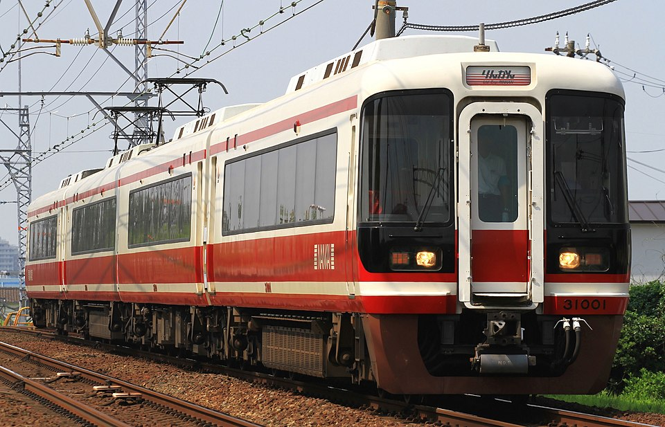
Travel up to KoyasanTravel up to Koyasan
Train + cable car + bus into the forested mountains (~800m, cool air). Rest on the way up after the festival night.
▶ watch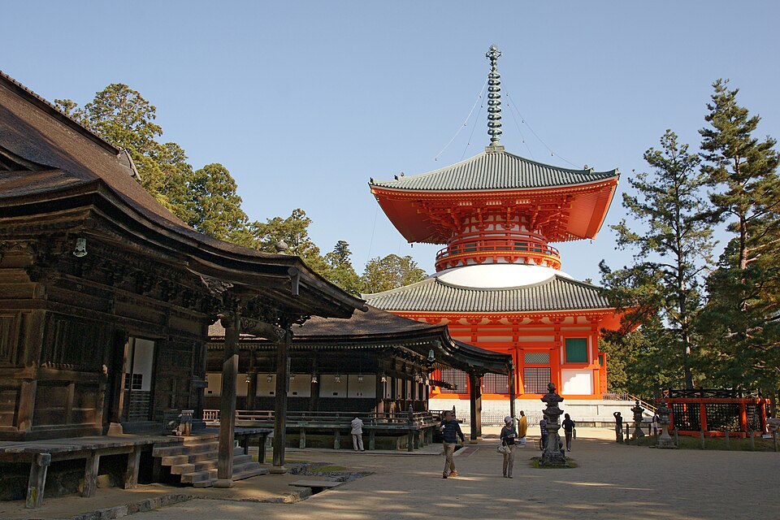
Free afternoon · Danjo GaranFree afternoon · Danjo Garan
Built-in free time. The sacred temple complex and the vermilion Konpon Daito pagoda in daylight — the founding core of the mountain. Optional: Kongobu-ji’s rock garden.
▶ watch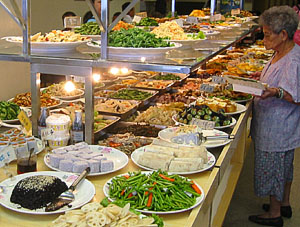
Shojin ryori temple dinnerShojin ryori temple dinner
Included monks’ vegetarian cuisine — tofu, koya-dofu, vegetables. Lower protein; carry a backup bar. One of your 3 included meals.
▶ watch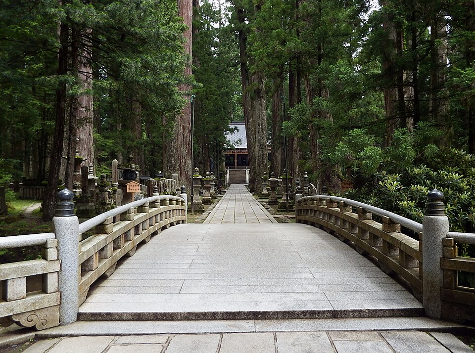
Okunoin night cemetery walkOkunoin night cemetery walk
Japan’s largest cemetery — 200,000+ moss-covered tombs under giant cedars, lantern-lit, with a guide. Haunting and beautiful. Knee-friendly path.
▶ watch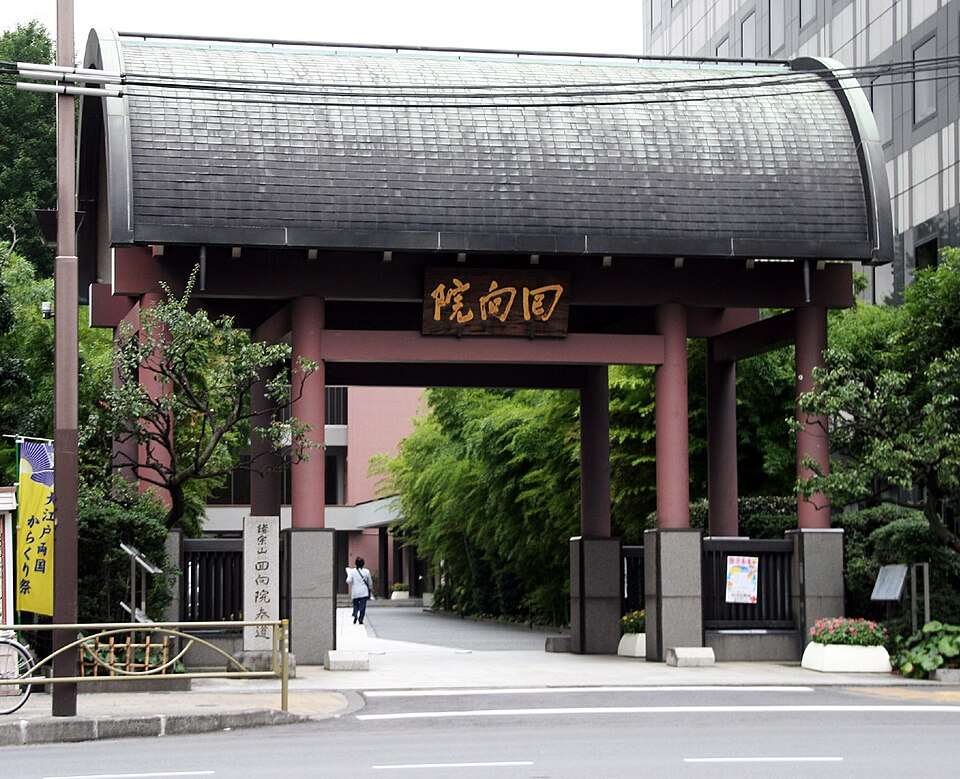
Temple lodging (shukubo)Temple lodging (shukubo)
Sleep in a working temple — tatami, futons, optional dawn prayers. Simple, authentic, a trip highlight.
▶ watch- Shojin ryori (temple dinner)Tonight's included Buddhist vegetarian meal at your shukubo — tofu, koya-dofu, seasonal vegetables, served the centuries-old way.
- Koyasan goma-tofuSesame tofu is the mountain's specialty — silky, rich; sold at a few shops in town.
- Temple breakfastMost shukubo serve a vegetarian breakfast after optional morning prayers.
- Koyasan main street (Daimon-dori)Modest shops near Kongobu-ji — Buddhist goods, juzu prayer beads, incense, goma-tofu, local sweets.
- NoteKoyasan is a tiny mountain monastery town — limited shopping by design; it's about the temples and the calm.
- Danjo Garan + Konpon DaitoThe sacred founding complex and its vermilion pagoda in daylight — the spiritual core, flat and walkable.
- Kongobu-ji + Banryutei rock gardenHead temple of Shingon Buddhism with Japan's largest rock garden and a tea break.
- Daimon GateThe great entrance gate — striking at sunset, illuminated at night.
- Reihokan MuseumKoyasan's treasure museum — Buddhist art and statuary if you want more depth.
Hiroshima — Peace & remembrance
From the sacred mountain to a city defined by 1945: the Peace Museum, the Dome, then okonomiyaki.
Travel to Hiroshima
Descend from Koyasan and travel west (likely Shinkansen). Rest on the journey.
▶ watch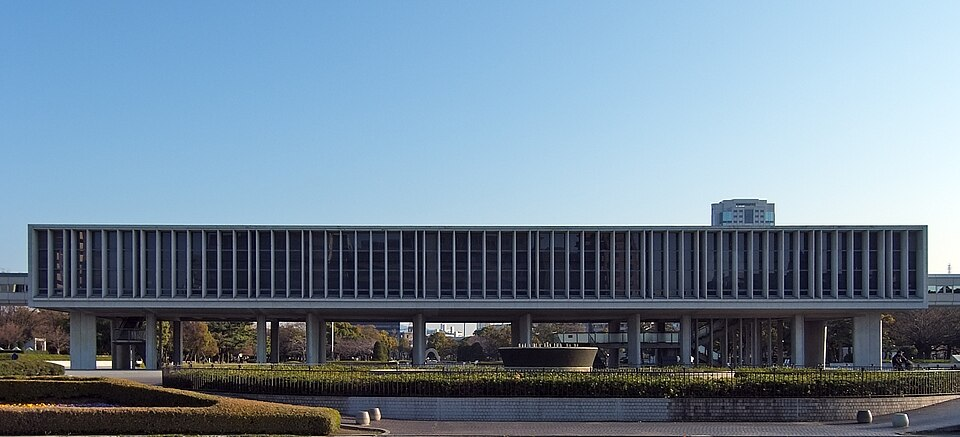
Peace Memorial MuseumPeace Memorial Museum
Documents the atomic bombing through artifacts and testimony. Profoundly moving and emotionally heavy — take it at your own pace. Among the most worthwhile things on the trip.
▶ watch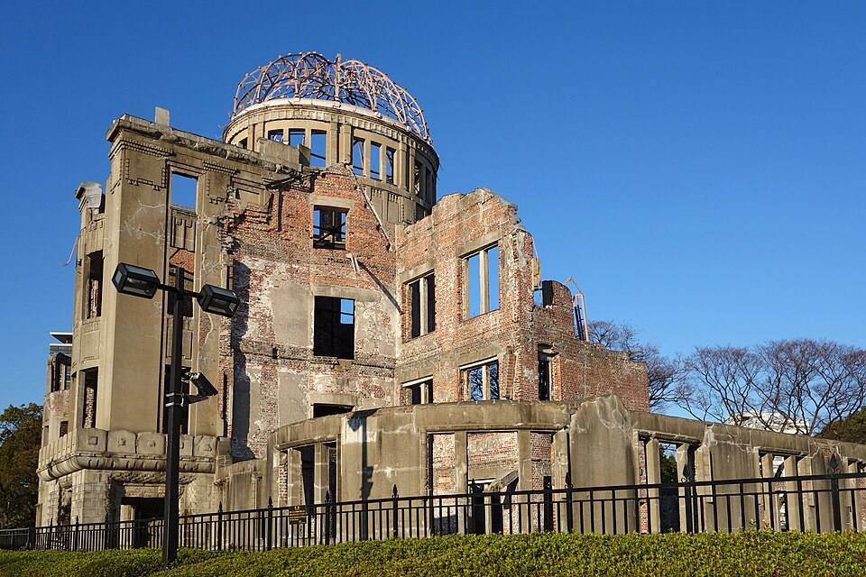
Genbaku Dome + Peace ParkGenbaku Dome + Peace Park
The preserved skeletal ruins at ground zero — a UNESCO site and global symbol of peace. The Cenotaph, Children’s Peace Monument, Flame of Peace.
▶ watch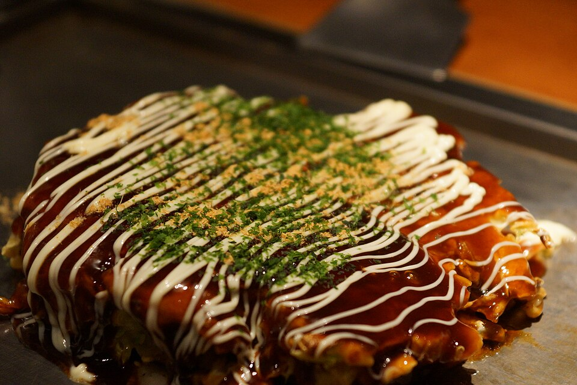
Hiroshima-style okonomiyakiHiroshima-style okonomiyaki
The city’s signature — layered with noodles (vs Osaka’s mixed style). A hearty, fun group meal to lift the mood after a sober day. A carb treat.
▶ watch- Hiroshima okonomiyaki (Okonomi-mura)The layered, noodle-stacked Hiroshima style — a whole building of stalls (Okonomi-mura) plus the tour's group dinner.
- Hiroshima oystersThe region's specialty — grilled, fried (kaki-fry), or raw; a genuine local must.
- Tsukemen & anagoHiroshima cold dipping-noodles and saltwater-eel rice are local favourites.
- Hondori shopping arcadeCentral covered shopping street — fashion, sweets, souvenirs near the Peace Park.
- Momiji manju everywhereMaple-leaf cakes are the classic regional omiyage — many flavours, great gifts.
- Shukkei-en GardenA serene scaled landscape garden in the city — calm, flat, knee-friendly.
- Hiroshima CastleReconstructed 'Carp Castle' with a museum — a gentle stroll through the grounds.
- Mazda MuseumFor a car-culture fix — the rotary/Mazda history + factory line (book ahead).
Miyajima + Mt Misen summit
Your free day: the floating torii, the sacred deer — then the ropeway and a push to the 535m summit.
Set out from Hiroshima (early)
Early matters today — for the ropeway queue, the heat, and the closing-time buffer. JR/tram to Miyajimaguchi + ferry, ~1h door-to-door.
▶ watch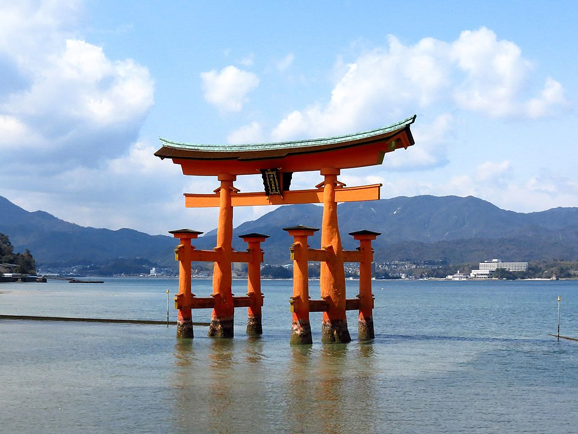
Itsukushima Shrine + floating toriiItsukushima Shrine + floating torii
Do the iconic shrine + O-torii first while fresh. High tide = it floats; low tide = walk up to it. Check the 28 Jul tide times. Deer greet you at the waterfront.
▶ watch Miyajima Ropeway
Miyajima RopewayMiyajima Ropeway
Two stages with a transfer to Shishiiwa Observatory (433m), ~¥2,000 rt. Great aerial views over the canopy. Pause here — honestly assess your knee before the trail.
▶ watch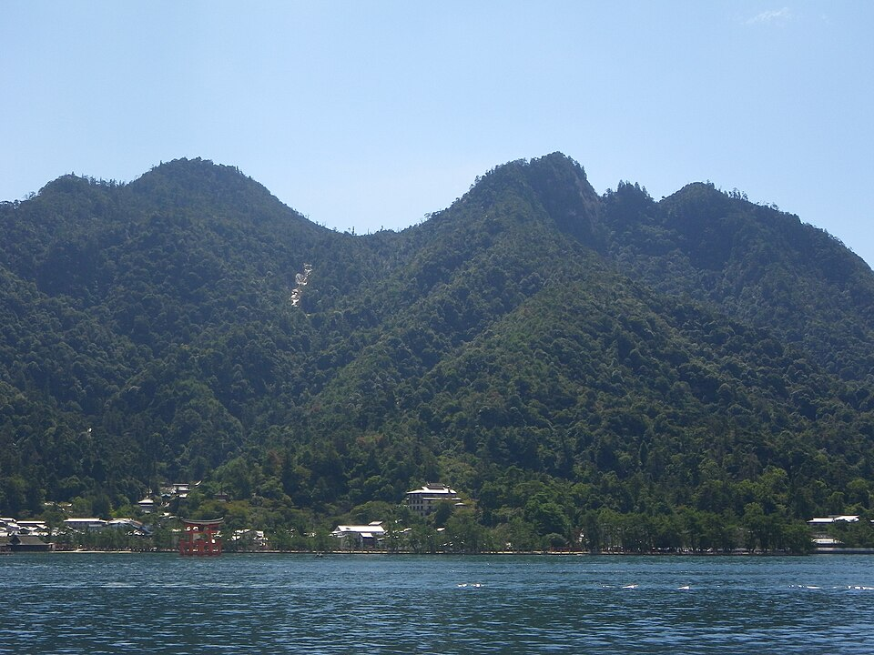
Summit push (~30 min trail)Summit push (~30 min trail)
Down-then-up over uneven rock and tall steps to the 535m summit: 360° Seto Inland Sea views and the 1,200-year eternal flame. Turn back at the observatory if the knee protests.
▶ watchRopeway down (with buffer)
Be back at the upper station well before the ~16:00 close — do NOT get stranded into a forced hike-down. Descent is the knee risk: go slow, poles out.
▶ watch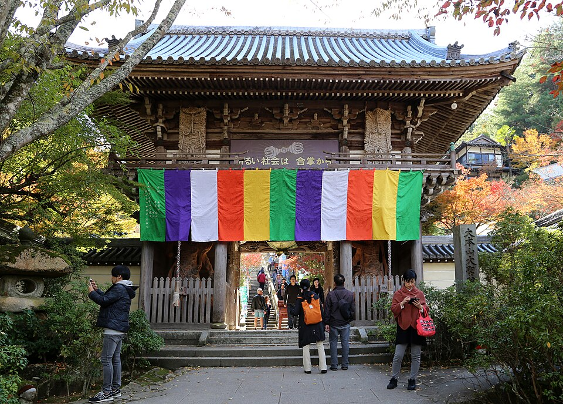
Sea-level recovery + Daisho-inSea-level recovery + Daisho-in
Rest the knee. Daisho-in is a lovely, gentle temple on the lower slopes. Oysters and anago-meshi on Omotesando. Ferry back ~16:30.
▶ watch- Miyajima oysters & anago-meshiThe island's two specialties — grilled oysters on the street and saltwater-eel rice bowls; the food experience here.
- Momiji manju, friedMiyajima invented the maple-leaf cake — try it freshly fried (age-momiji) on Omotesando.
- Summit/observatory picnicGrab a konbini bento before the ropeway and eat with the Inland Sea view up top.
- Omotesando shopping streetThe island's main street — rice scoops (a Miyajima craft), oyster goods, sweets, souvenirs.
- Deer cautionKeep paper bags/maps tucked away — the free-roaming deer nibble them.
- Daisho-in TempleA beautiful, atmospheric temple on the lower slopes — spinning prayer wheels, far gentler than Mt Misen; the knee-friendly highlight.
- Itsukushima at high vs low tideTime it: high tide = the 'floating' torii; low tide = walk out to its base. Both are special.
- Machiya-dori back lanesQuieter old streets parallel to the main drag — cafés and craft shops, fewer crowds.
Osaka — castle & Dotonbori
A scenic mountain train, the magnificent castle, then your first hit of Dotonbori neon and street food.
Included breakfast + scenic Wakayama train
Included breakfast, then a scenic local-train ride through the Wakayama mountains rather than a plain bullet hop. One of your 3 included meals.
▶ watch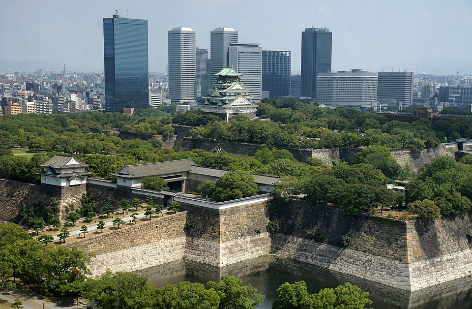
Osaka CastleOsaka Castle
A magnificent five-story keep on massive stone walls, ringed by moats and a large park. The exterior is stunning; flat, knee-friendly grounds (elevator inside).
▶ watch Dotonbori
DotonboriDotonbori
The neon canal — the Glico running man, giant signs, street food everywhere. A great group night out. Easy, flat terrain (good recovery after Mt Misen).
▶ watch- Dotonbori street foodGround zero for takoyaki, okonomiyaki (Mizuno, since 1945), and kushikatsu — the 'eat till you drop' heart of Osaka. The group night out.
- 551 Horai butamanOsaka's iconic steamed pork buns — the red boxes are an institution; grab some hot.
- Kinryu / Ichiran ramenLate-night Dotonbori ramen — the dragon-sign Kinryu is a classic Osaka stop.
- Dotonbori & EbisubashiNeon canal shopping + the Glico-sign photo; Don Quijote Dotonbori (with the Ferris wheel) is open late.
- Shinsaibashi-sujiJapan's grand covered arcade runs north from Dotonbori — fashion, cosmetics, drugstores.
- Umeda Sky BuildingFloating Garden rooftop observatory — 360° city views, best at dusk; the see-through escalator up is half the fun.
- Osaka Castle interior/museumGo up the keep (elevator) for the history museum and views over the park.
- Tonbori River CruiseA short, restful neon canal boat ride — a different angle on Dotonbori, no walking.
Sushi class → America-mura → farewell
Make your own sushi, dig records in America-mura, a sunset over the city, then the group send-off.
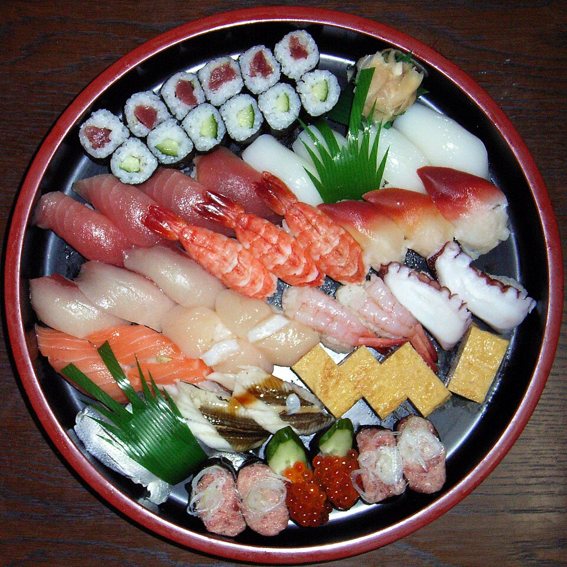
Sushi-making classSushi-making class
A hands-on traditional class — a tour favourite and a skill to take home. Included.
▶ watch Included lunch — your own sushi
Included lunch — your own sushiIncluded lunch — your own sushi
Eat what you made. A Shred-friendly included meal (fish protein, modest rice) — enjoy guilt-free. Your 3rd included meal.
▶ watch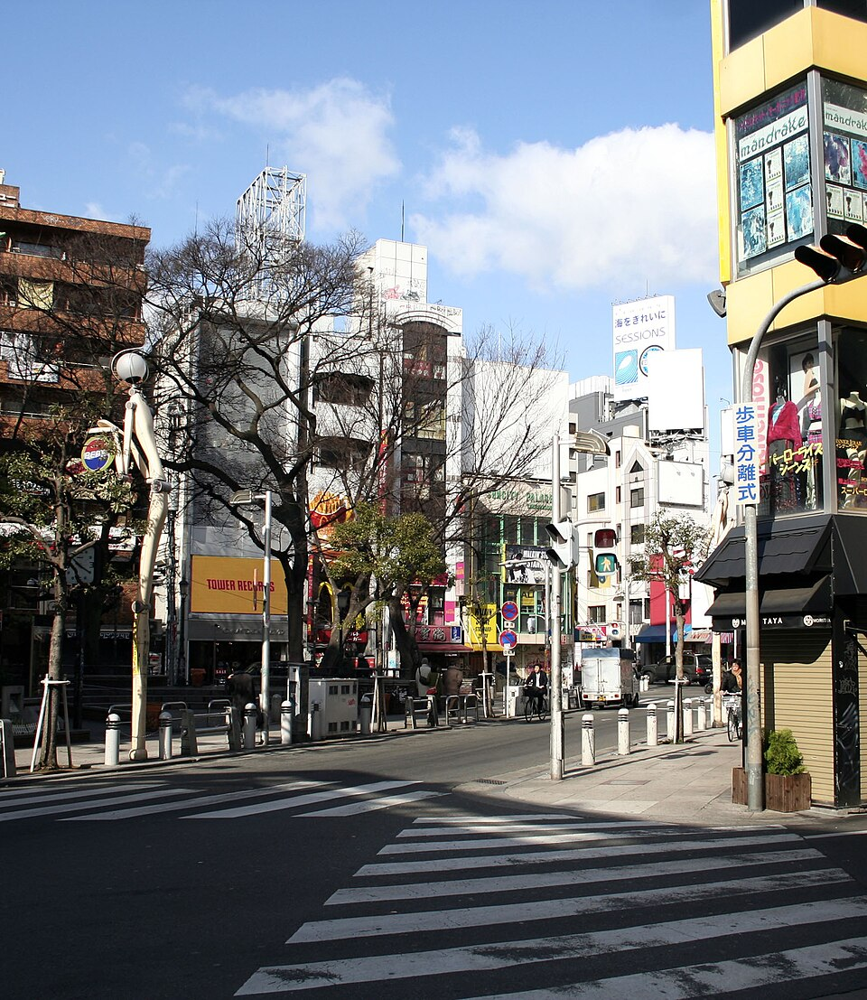
America-mura (records + streetwear)America-mura (records + streetwear)
Osaka’s youth-culture hub — vinyl, streetwear, vintage, indie shops. Dig records for the DJ kit and scout tomorrow’s Shinsaibashi shopping as you go.
▶ watch Umeda Sky Building at golden hour
Umeda Sky Building at golden hourUmeda Sky Building at golden hour
Twin-tower rooftop observatory — 360° over the skyline and river, best at dusk. Glass elevator + transparent escalator up. Knee-friendly, a photo highlight.
▶ watchFarewell group night out
The send-off — drinks, food, swap contacts. Metro back south to the group (~15 min). Flex the sunset vs dinner timing; Osaka transit is quick.
▶ watch- Kuromon Ichiba Market'Osaka's Kitchen' — a 580m covered market of fresh seafood-on-sticks, grilled scallops, wagyu skewers, uni. Best before 11am; a great grazing lunch.
- America-mura cafésTrendy coffee, fluffy pancakes, and casual eats in the youth-culture quarter as you dig records.
- Rikuro's jiggly cheesecakeOsaka's famous wobbly cheesecake — a fun sweet stop (Namba/Shinsaibashi).
- America-mura (Ame-mura)Osaka's Harajuku — vintage, streetwear, record shops, Triangle Park; the DJ/music dig. (Quieter daytime is best.)
- Shinsaibashi-sujiScout it now for tomorrow's big shop — the main arcade flows right into America-mura.
- Umeda Sky Building (sunset)Tonight's plan — golden-hour rooftop views; pair with Umeda's huge underground shopping mazes.
- Abeno Harukas 300Japan's tallest building, an alternative sky-deck near Tennoji.
- NakanoshimaRiverside museums and architecture for a calmer afternoon — flat and easy.
Checkout → shopping → pub crawl
The tour ends. Your one shopping day, more Osaka, then a contained farewell crawl before the dawn flight.
Tour checkout — stay on at the hostel
Goodbyes, swap contacts. You’re keeping the same TruTravels hostel for tonight (extra night booked with them) — no luggage move, no hotel hunt. Drop your day bag and head out.
▶ watch Shinsaibashi / Den Den Town / Donki
Shinsaibashi / Den Den Town / DonkiShinsaibashi / Den Den Town / Donki
Your one shopping day. Covered arcade (fashion, cosmetics), Den Den Town (electronics/anime), Don Quijote (souvenirs). Carry your passport for tax-free over ¥5,000.
▶ watch Kuromon Ichiba Market
Kuromon Ichiba MarketKuromon Ichiba Market
“Osaka’s Kitchen” — fresh seafood, grilled scallops, wagyu skewers. Shred-friendly grazing lunch, best earlier when freshest.
▶ watch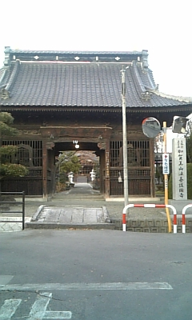
Hozen-ji Yokocho (+ optional Shinsekai)Hozen-ji Yokocho (+ optional Shinsekai)
A moss-covered temple in a tiny lantern-lit stone alley off Dotonbori — a quiet pocket. Optional: retro Shinsekai + Tsutenkaku tower if you want more sightseeing.
▶ watch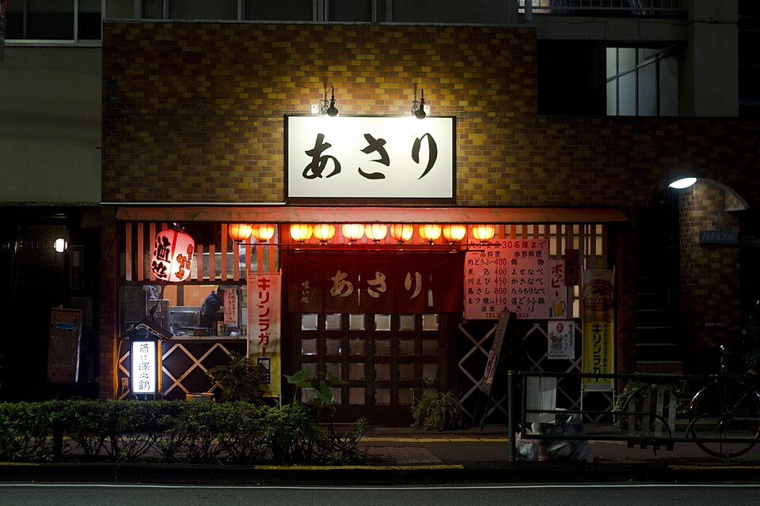
Final pub crawl — Namba / Ura-NambaFinal pub crawl — Namba / Ura-Namba
An organised izakaya crawl through Hozenji Yokocho + Ura-Namba’s local bars — ~3h, starts ~18:00, wraps ~21:30–22:00. Sociable last night, meets people.
▶ watch- Kuromon Market (last grazing)One more pass for premium seafood-on-sticks before you fly — grilled scallops, otoro, uni, fruit.
- Shinsekai kushikatsuRetro 'New World' district under Tsutenkaku Tower — deep-fried skewers (no double-dipping!); Daruma/Yaekatsu are the names. Gritty, cheap, iconic.
- Ura-Namba izakaya (the crawl)Tonight's organised crawl through the back-street local bars — yakitori, karaage, standing bars; the sociable send-off.
- Shinsaibashi-sujiThe main covered arcade — fashion, cosmetics, drugstores; tax-free over ¥5,000 (carry passport).
- Den Den Town (Nipponbashi)Osaka's Akihabara — electronics, anime, cameras, gadgets; buy big tech here at the end so you're not carrying it.
- Don Quijote + Namba Parks / TakashimayaDonki for bulk souvenirs/snacks (open late); Namba Parks rooftop-garden mall + Takashimaya depachika for gifts.
- Hozen-ji YokochoA moss-covered temple in a tiny lantern-lit stone alley off Dotonbori — a quiet pocket, quick and lovely.
- Shitenno-ji TempleOne of Japan's oldest Buddhist temples — peaceful, flat, free outer grounds; a calm break from shopping.
- Tonbori River Cruise / EbisubashiLast neon-canal photos; a short cruise if you want to rest your legs before the flight.
- Spa World / Solaniwa onsenA big bathhouse near Shinsekai if you want to soak before the long flight (tattoo rules vary).
Fly home from Osaka
Pre-dawn run to KIX, and the long journey back to Mumbai via Hong Kong.
 Hostel → KIX
Hostel → KIXHostel → KIX
Leave pre-dawn. Nankai Rapi:t (from Namba) or JR Haruka (from Tennoji/Shin-Osaka) to KIX, ~40–50 min depending on the hostel’s location. Be at KIX by ~07:00 for the 09:05 flight.
▶ watchDepart KIX → Mumbai (via Hong Kong)
Cathay Pacific, 15h30m total, lands Mumbai 21:05. Sleep on the plane — especially if the crawl ran late.
▶ watch